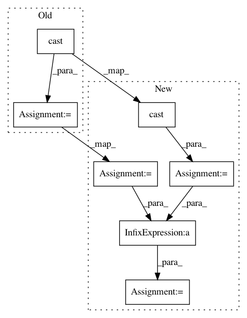

f9b98760f445fc0219cfc9c4cada2b5f9d35ab1b,basic/model.py,Model,_build_loss,#Model#,219
Before Change
concat_y = tf.concat(1, [na, tf.reshape(self.wy, [-1, M * JX])])
losses = tf.nn.softmax_cross_entropy_with_logits(self.concat_logits, tf.cast(concat_y, "float"))
else:
losses = tf.nn.softmax_cross_entropy_with_logits(
self.logits2, tf.cast(tf.reshape(self.wy, [-1, M * JX]), "float"))
ce_loss = tf.reduce_mean(loss_mask * losses)
tf.add_to_collection("losses", ce_loss)
else:
After Change
loss_mask = tf.reduce_max(tf.cast(self.q_mask, "float"), 1)
if config.wy:
losses = tf.nn.sigmoid_cross_entropy_with_logits(
tf.reshape(self.logits2, [-1, M, JX]), tf.cast(self.wy, "float")) // [N, M, JX]
num_pos = tf.reduce_sum(tf.cast(self.wy, "float"))
num_neg = tf.reduce_sum(tf.cast(self.x_mask, "float")) - num_pos
damp_ratio = num_pos / num_neg
dampened_losses = losses * (
(tf.cast(self.x_mask, "float") - tf.cast(self.wy, "float")) * damp_ratio + tf.cast(self.wy, "float"))
new_losses = tf.reduce_sum(dampened_losses, [1, 2])
ce_loss = tf.reduce_mean(loss_mask * new_losses)
if config.na:
na = tf.reshape(self.na, [-1, 1])
In pattern: SUPERPATTERN
Frequency: 3
Non-data size: 7
Instances
Project Name: wenwei202/iss-rnns
Commit Name: f9b98760f445fc0219cfc9c4cada2b5f9d35ab1b
Time: 2017-01-24
Author: seominjoon@gmail.com
File Name: basic/model.py
Class Name: Model
Method Name: _build_loss
Project Name: reinforceio/tensorforce
Commit Name: 47d5c244706ab01859a3931f66066407a9d5efbb
Time: 2017-10-14
Author: aok25@cl.cam.ac.uk
File Name: tensorforce/core/networks/layer.py
Class Name: Nonlinearity
Method Name: tf_apply
Project Name: GPflow/GPflow
Commit Name: d57bfbec8e170a6c8517d60b585393b0f3b3c732
Time: 2018-11-05
Author: art.art.v@gmail.com
File Name: gpflow/models/svgp.py
Class Name: SVGP
Method Name: log_likelihood